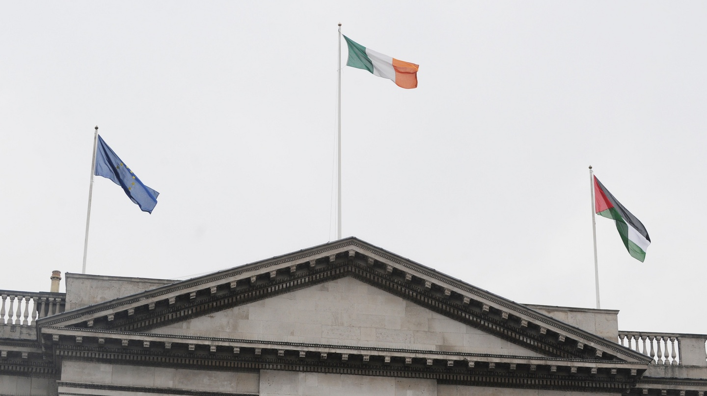

Irish and Palestinian Independence: A United Struggle
By Ibrahim Fadel - May 2021

Dublin City Hall, 2017. Credits to The Irish Times
Ireland has faced British colonialism for hundreds of years. From the Norman invasion, to the Cromwellian conquest, to The Troubles, their fight against colonialism and ethnic cleansing has endured. Today, many parallels can be drawn between the centuries long fight for independence in Ireland, and the ethnic cleansing and colonization of Palestine. The establishment of plantations in Ireland, construction of Peace Walls, and the policies of the British government during the Potato Famine bear striking similarities to the creation of Israeli settlements in the West Bank, the erection of the West Bank Barrier, and the blockade on Gaza.
The colonization of Ireland began with the Norman invasion in 1169. They seized and claimed sovereignty over large amounts of Irish land. Conflict continued for hundreds of years between the English and Irish. The Irish resented British rule, as such, they revolted several times. Following the Desmond Rebellions and the Nine Years War during the 16th century, British plantation began. Plantations in Ireland involved the seizure of native land and the colonization of this land with British settlers. This practice was seen as a means to culturally assimilate and ‘civilize’ the Irish, as well as to secure British control over the land.
The colonization of Palestine has been remarkably similar. In 1948, Jewish militia depopulated and destroyed hundreds of villages, expelling over 700,000 Palestinians. In more recent years, illegal settlements have propped up throughout Palestine, most notably in the West Bank. These settlements are constructed in Palestinian territory, exclusively for their Jewish population, in an effort to bring Palestinian land under Israeli sovereignty. These settlements, analogous to the plantations in Ireland, resulted in the expulsion of Palestinians from their native land.
In the latter half of the 20th century, systematic Loyalist oppression and violence against the Civil Rights Movement which called for an end to the discrimination of Catholics led to ‘The Troubles’ -- a series of protests and riots. Ian Paisley, a Northern Ireland Loyalist, founded paramilitary forces; using them, he undermined peaceful protests, and carried out mass evictions of Catholics. British soldiers were deployed to respond to the violence, but ultimately committed atrocities themselves such as Bloody Sunday in which soldiers fired on 26 Catholic civilians who were marching peacefully. Peace Walls were eventually constructed in order to separate Catholic neighborhoods from Protestant neighborhoods and limit violence.
Much like the Irish, Palestinians have been protesting against occupation and ethnic cleansing for years. The First Intifada (Uprising) was a series of protests and riots which took place during 1987 that called for the end to Israeli occupation of Palestine. The IDF deployed tens of thousands of troops in order to suppress the rebellion. The Second Intifada, or the Al-Aqsa Intifada, began in the year 2000, and was sparked by different events, yet called for the same things. Again, the rebellion led to mass bloodshed. Following this rebellion in 2002, Israel began construction of their separating wall in the West Bank. This wall is a barrier between Palestinians and Israelis which stretches beyond UN defined boundaries into Palestinian territory.
The Irish Potato Famine began in 1845 when a fungus-like organism called Phytophthora infestans spread throughout Ireland wiping out up to half of their potato crop. Three-quarters of the crop would be ruined over the next seven year. During such a famine, one might expect to halt the export of the little remaining food. Exports, however, did not halt. The British government facilitated the export of more than 26 million bushels of grain from Ireland to England in 1845, and these numbers would only increase as the famine progressed. In 1846, the Irish successfully petitioned the British to repeal the Corn Laws and tariffs on grain which both made other food items extremely expensive. A Relief Commission was also established in order in hopes of providing aid to Irish people; however, then Prime Minister Lord John Russell almost immediately abolished it. Furthermore, Queen Victoria famously blocked a significant Turkish donation from reaching the Irish. The British government was not simply complicit in the death of Irish people, they were perpetrators who accelerated it.
In similar fashion, Gaza has been under an Israeli blockade since 2007. Israel’s military restricts Palestinians from fishing further than 5.6 kilometers off shore, firing on anyone who goes beyond this mark. Israel controls roughly half of Gaza’s electricity and routinely shuts it off; it’s fighter jets and drones regularly patrol the airspace; their forces block humanitarian relief vessels from delivering supplies to Gazans and routinely block the import of goods such as food and toys. The blockade of Gaza has been declared to be in violation of international humanitarian law by many, including the International Committee of the Red Cross.
I’d like to conclude not just by emphasizing the similarities between the Irish and Palestinian fights for independence, but also by highlighting their solidarity with one another. Many members of the Irish government have voiced overwhelming support for the Palestinians. The Palestinian flag was even flown in Dublin city hall for a month as a sign of solidarity. The Representative Office of Ireland in Ramallah manages a program for development and humanitarian assistance in Palestine, and they regularly provide relief to Palestinians, despite it often being destroyed by Israel. Both Ireland and Palestine have endured apartheid policies enforced by foreign settlers, brutal and repressive rule, and, of course, ethnic cleansing.
In light of recent events in Sheikh Jarrah, Jerusalem, and the Al-Aqsa mosque this Ramadan, I would like to highlight that the Palestinian struggle is not unique, it is a story known by many. It is a story of ethnic cleansing, cultural assimilation, and settler colonialism. South Africans have experienced it, just as the Irish did, just as the Palestinians did. The Irish fought for hundreds of years to achieve independence, and I believe that the fight against settler colonialism will prevail in Palestine as well.